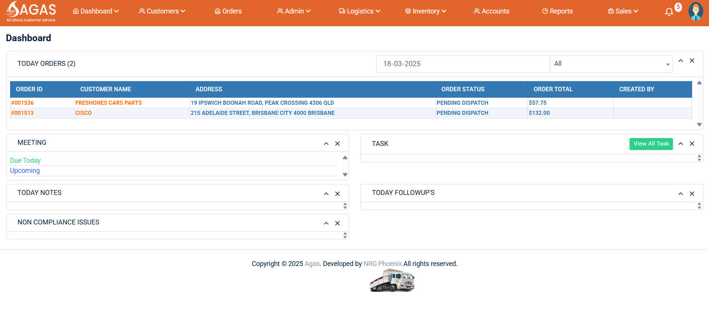
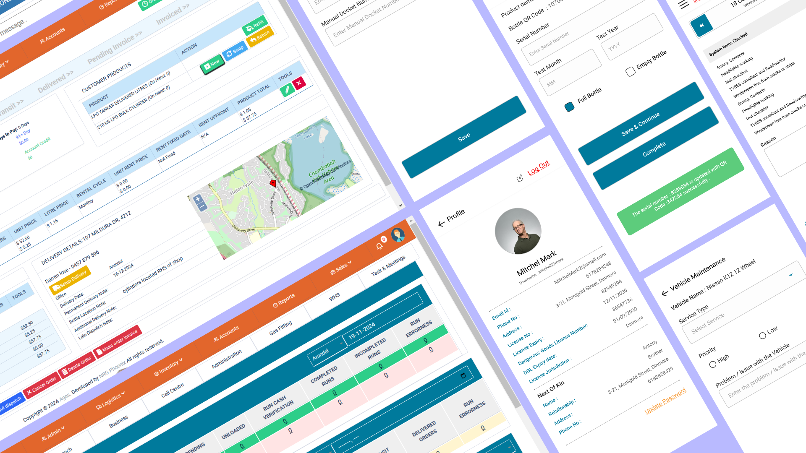
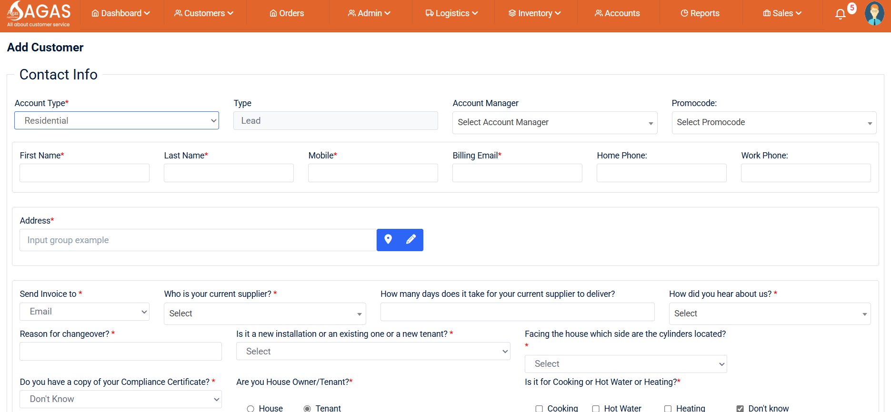

AGAS International Australia



Overview
The AGAS International Australia project is a comprehensive gas booking and management system designed to streamline operations for gas booking, driver and yard management, dispatch activities, and more. The platform includes a web application for managing all activities and a mobile app for drivers and yard members.
Key Features
- Gas Booking: Easy and efficient gas booking system for customers.
- Driver Management: Real-time tracking and management of drivers.
- Yard Management: Efficient management of gas yards and inventory.
- Dispatch Activities: Automated dispatch scheduling and tracking.
- User Roles: Separate interfaces for admins, drivers, and yard members.
- Mobile App: Dedicated app for drivers and yard members to manage tasks.
- Reporting & Analytics: Real-time reports for gas sales, deliveries, and inventory.
Technologies Used
React.js
Flutter
Spring Boot
MySQL
- Frontend (Web): React.js for the admin dashboard.
- Mobile App: Flutter for cross-platform driver and yard member apps.
- Backend: Spring Boot for robust and scalable API development.
- Database: MySQL for storing gas, driver, and inventory data.
- Authentication: JWT-based authentication for secure access.
- API Communication: RESTful APIs for seamless data exchange.
- State Management (Mobile): Provider for state management in Flutter.
My Contributions
- Developed the mobile application using Flutter for drivers and yard members.
- Designed and implemented the backend architecture using Spring Boot.
- Integrated real-time tracking for drivers and dispatch activities.
- Built RESTful APIs for gas booking, driver management, and yard operations.
- Implemented JWT-based authentication for secure user access.
- Optimized database queries for improved performance and scalability.
- Added reporting and analytics features for gas sales and deliveries.
Special Skills in Spring Boot
- Microservices Architecture: Designed and implemented microservices for scalability.
- Spring Security: Implemented role-based access control and secure authentication.
- Hibernate: Used for efficient database interactions and ORM mapping.
- RESTful API Design: Developed clean and well-documented APIs.
- Performance Optimization: Improved API response times using caching and query optimization.
- Integration with Third-Party APIs: Integrated payment gateways and SMS services.
Challenges & Solutions
- Real-Time Tracking: Implemented WebSocket for real-time driver tracking.
- Scalability: Designed the backend to handle a growing number of users and transactions.
- Cross-Platform Development: Used Flutter to ensure consistent performance on iOS and Android.
- Data Security: Implemented encryption and secure authentication mechanisms.
Outcome & Impact
The AGAS International Australia platform has significantly improved operational efficiency, enabling seamless gas booking, driver management, and dispatch activities. The mobile app has enhanced communication and task management for drivers and yard members.
Future Enhancements
- Integration with IoT devices for real-time gas level monitoring.
- Advanced predictive analytics for demand forecasting.
- Mobile app enhancements for offline functionality.